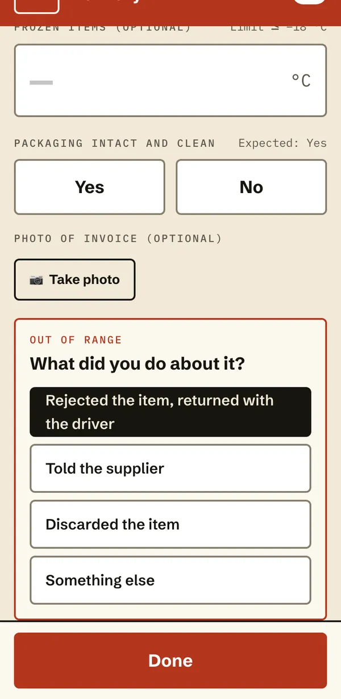
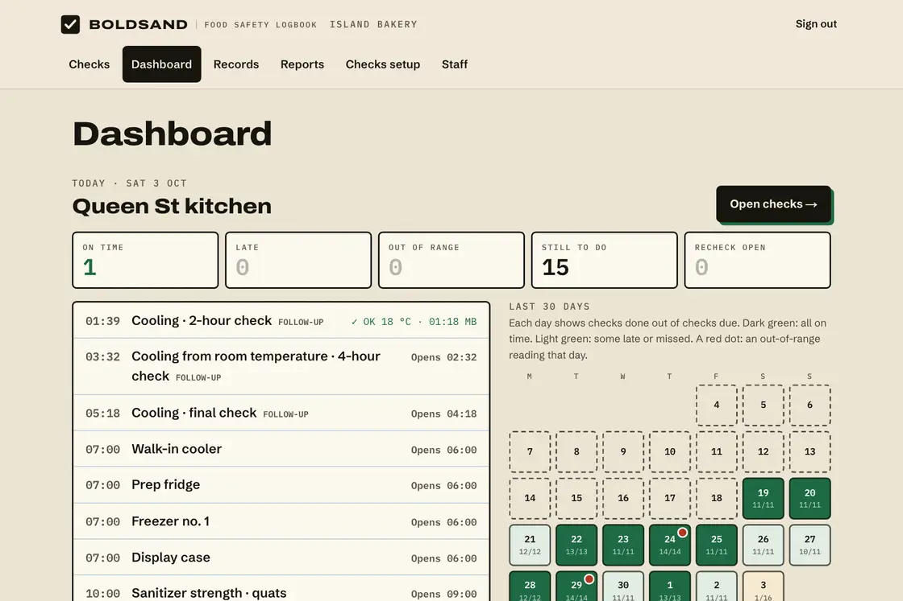
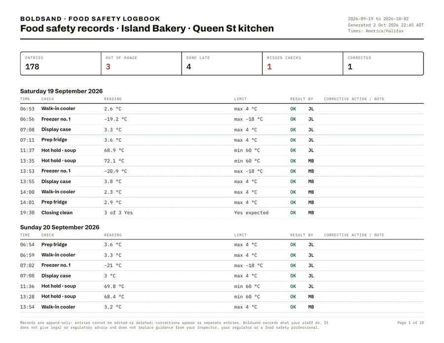

Restaurants, cafés, bakeries, caterers & grocers
Daily checks kept in order for your provincial food premises inspection.
- Fridge, freezer and holding temperatures
- Cleaning schedules signed off by shift
- Deliveries checked on arrival
Food businesses · Prince Edward Island
Swap the clipboard for a quick checklist on your phone. Temperatures, cleaning and deliveries get logged on time, by the person who checked, and your records are ready the moment the inspector walks in. We set it all up for you.
Screens from the working logbook, filled with demo data from a sample bakery. No mock-ups.



None of this is about caring less. A clipboard on a busy shift is easy to skip, easy to backfill and hard to find later. That’s what inspectors notice.
No software project for you to manage. We start from the logs you already keep and turn them into checklists your team can finish in seconds.
In person or by video, for kitchens in Prince Edward Island. Bring the binder, the clipboard, the whiteboard. We note every check you do now and set them up in the app.
Your fridges, your freezers, your cleaning routine, your suppliers. Named the way your staff already talk about them.
Staff log checks on any phone or tablet. You see what’s done and what’s late, and print a report whenever you need it.
Pick what fits your business. We add or change checks as you go, at no extra cost during the pilot.
Whether a public health inspector visits once a year or you hold a federal food licence, the job is the same: do the checks, and be able to prove it.
Daily checks kept in order for your provincial food premises inspection.
Monitoring records for your Preventive Control Plan and lot-code traceability under the Safe Food for Canadians Regulations.
What each regulation says about records and day-to-day practice. Your inspector and your food safety plan decide what you check. Pilots start in Prince Edward Island.
En français. L’application sera offerte en français. Laissez-nous votre nom et nous vous avertirons quand elle le sera.
We’re looking for ten food businesses to shape the logbook around real kitchens, starting in Prince Edward Island. Founding businesses get the most attention we will ever be able to give.
Pilots start in Prince Edward Island. Elsewhere in Atlantic Canada? Leave your name and we’ll tell you when we’re there.
We sit down with your current paper logs and set the same checks up in the app, so you can try it with your own fridges.
Hi, I’m Deya Khalifa, a software developer in Charlottetown. I’m building this logbook for local food businesses, and I’m looking for the first kitchens to try it. When you call, you get me.
No. The logbook opens on any phone, tablet or computer. Staff tap a link, do the check and initial it. We show everyone how on day one.
The setup session is free. For founding businesses, we agree on a monthly price with you before you pay anything, and that price stays the same as long as you stay. No long contract during the pilot.
No. Your plan and your inspector decide what needs to be checked. The logbook is where your team records that the checks were done, what the readings were, and what was done when something was off.
They belong to you. You can export or print all of them at any time, and if you leave, you take them with you. We only use them to run your logbook.
If your binder is complete, on time and easy to find, keep it. If you’d like to see the difference, a free setup session puts your own checks in the app so you can compare.
Checks still save on the phone or tablet, and they are sent as soon as the connection comes back. The screen shows when something is waiting to send.
We are setting up the logbook to store pilot records in Canada, before the first pilot starts. They belong to you, and you can export all of them at any time.
Not yet. French is planned. If your team needs it, tell us and we’ll let you know when it’s ready.
Not yet. Pilots start in Prince Edward Island. Elsewhere in Atlantic Canada? Leave your name and we’ll tell you when we’re there.
Tell me what kind of business you run and the best time to talk. I’ll reply the same day.
902-316-2316